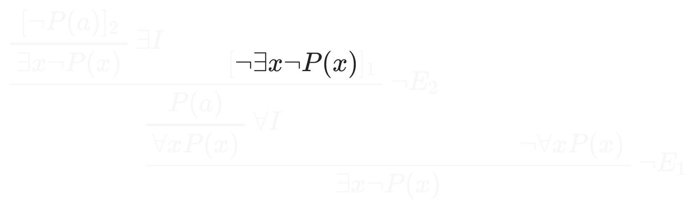
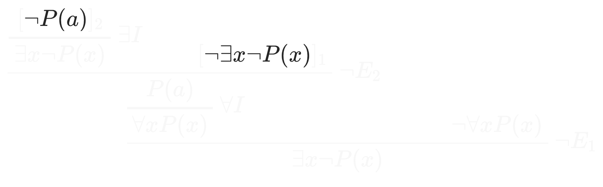
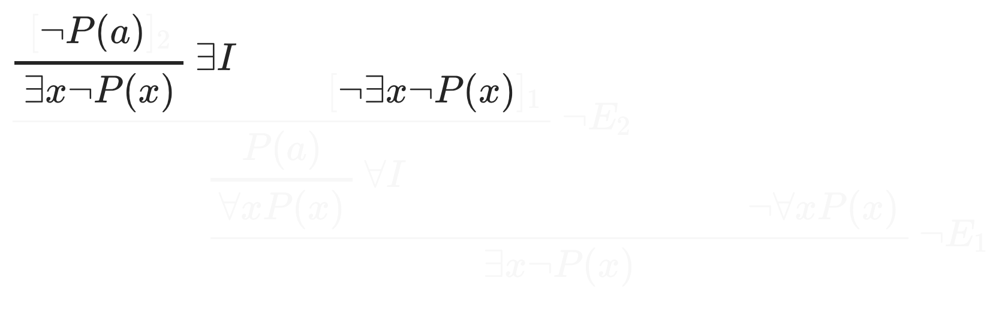
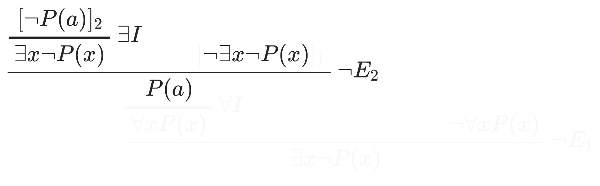
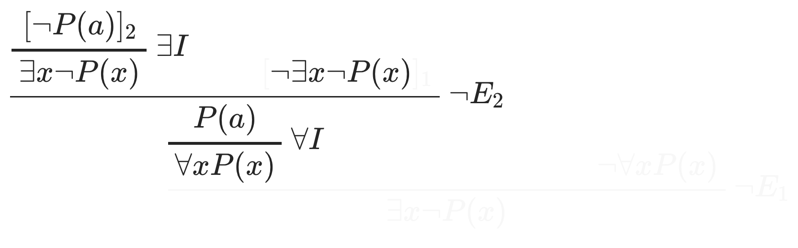
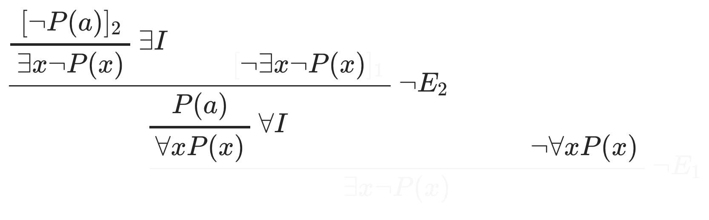
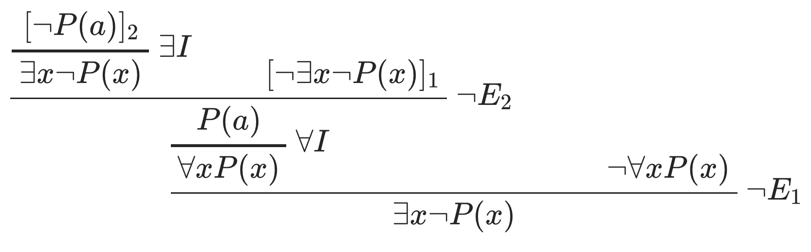

First order natural deduction
\(\def\phi{\varphi}\) We have seen natural deduction proofs for propositional logic. For first order logic there are extra rules to deal with the quantifiers.
Learning outcomes:
After completing this lesson you should be able to:
-
write proofs for simple first order formulas in the natural deduction style
-
correctly label every step of a natural deduction proof with the rule that allows it
-
find errors in attempts at natural deduction proofs that are faulty.
3.1 The informal ideas behind the rules
For each of the two quantifiers there are two kinds of argument which are modelled by natural deduction rules. The kinds of arguments will be introduced, and then we will see how they have rules that capture these.
3.1.1 Universal elimination
Idea
The argument goes like this:
- We know that for all \(x\) the statement \(\phi\) holds.
- We have a term \(t\) that we need to use in our argument.
- So we know that the statement \(\phi\) holds if we replace \(x\) by \(t\) everywhere in the statement.
The idea is that we know \(\phi\) talking about \(x\) holds for all elements of the domain, so if we make the same statement but about a particular thing, \(t\), it must also hold.
Examples
These take place in a setting where the stated things are known.
- We know that for all \(x\), \(x^2 \geq 0\).
- We are talking about the constant 42 in our argument.
-
So we know that \(42^2 \geq 0\).
-
We know that for all \(x\), \(x^2 \geq 0\).
- We are talking about the term \(y +1\) in our argument.
- So we know that \((y+1)^2 \geq 0\).
But you do have to be careful:
- We know that for every \(x\), we can find an element \(y\) where \(x \neq y\).
- Since we know that for every \(x\), it must hold in particular for \(y\).
- So we know that we can find an element \(y\) where \(y \neq y\).
No. This is not a valid argument.
We substituted \(y\) for \(x\) in a setting where the \(y\) became bound by another quantifier.
3.1.2 Universal introduction
Idea
This is when you have this kind of argument:
- We are using \(x\) for a completely arbitrary element of the domain, being careful not to assume it has any special properties.
- We show that \(x\) has to have the property stated in the formula \(\phi\).
- Because \(x\) was arbitrary, we conclude that the formula \(\phi\) must hold for all \(x\).
Example
- Imagine we are talking about natural numbers.
- Let's use \(x\) for an arbitrary number.
- Now, suppose \(x\) is odd, so \(\mathit{Odd}(x)\) holds.
- We can find \(k\) such that \(x = 2k + 1\).
- Then \(x^2 = 2(2k^2 +k) + 1\).
- We have shown \(\mathit{Odd}(x) \to \mathit{Odd}(x^2)\).
- As \(x\) was arbitrary, we conclude that
You have to be very careful that you are not assuming anything special about \(x\) when making this type of argument.
Now a second example:
Security example
- assume \(x\) is arbitrary person
- and imagine they are inside Room 27
- but the only route from the outside to room 27 passes through corridor 15 (information from map of building)
- conclude: everyone in room 27 has passed through corridor 15
3.1.3 Existential elimination
Idea
The argument goes like this:
- We know there is some \(x\) with the property stated by \(\phi\).
- Let's introduce a new name, \(a\), for a particular thing with this property.
- We deduce that some statement, \(\psi\), (not involving \(a\)) must hold by an argument using the assumption that \(a\) has property \(\phi\).
- We conclude that \(\psi\) holds on its own, without the assumption about \(a\) having property \(\phi\).
There are differences about how this is explained in different books: one way is to allow \(a\) to be a new constant (so strictly speaking we have to expand the language), another is to say \(a\) is a variable – you can call it \(x\), but this can be confusing in some cases.
Example
- Fred can see everyone in room 27:
\(\forall x\, (\mathit{IsIn}(x, room27) \to CanSee(fred,x ))\). - There is someone in room 27:
\(\exists y\, \mathit{IsIn}(y, room27)\). - (\(\ast\)) Let's call this person \(p27\) and work under the assumption \(\mathit{IsIn}(p27, room27)\).
- We know (\(\forall\) elimination) that:
\(\mathit{IsIn}(p27, room27) \to \mathit{CanSee}(fred,p27 )\). - We deduce (\(\to\) elimination) that:
\(\mathit{CanSee}(fred,p27 )\) - We get (\(\exists\) introduction) that:
\(\exists x\, \mathit{CanSee}(fred,x )\), Fred can see someone,
but this is under the assumption \(\mathit{IsIn}(p27, room27)\). - Now, we use \(\exists\) elimination to conclude:
\(\exists x\, \mathit{CanSee}(fred,x )\), Fred can see someone.
This no longer depends on the assumption in \(\ast\).
3.1.4 Existential Introduction
Idea
The argument goes like this:
- We have a statement \(\phi\) about some particular term \(t\).
- We conclude there is some \(x\) with the property stated by \(\phi\) where we replace \(t\) by \(x\).
Example
- We know Fred is in room 27: \(\mathit{IsIn(Fred, Room27)}\).
- We conclude there is someone in Room 27: \(\exists x\, \mathit{IsIn}(x, \mathit{Room27})\).
3.2 The rules for quantifiers expressed formally
3.2.1 Existential Rules
Introduction Rule
Here \(\phi(t)\) means some formula containing a term \(t\), and \(\phi (x)\) means the same formula but with \(t\) replaced by \(x\).
For example (assuming \(1\) and \(2\) are constants in the language and \(+\) is a function symbol)
Elimination Rule
The idea of the \(a\) here is as an arbitrary constant.
This rule can only be used under certain conditions. All of the following must happen in a correct use of the rule.
- \(a\) does not occur in \(\phi(x)\), and
- \(a\) does not occur in \(\psi\), and
- \(a\) does not occur in any undischarged assumption (except \(\phi(a)\) itself) used in the derviation of \(\psi\) from \(\phi(a)\).
Example
The existential quantifier rules are shown in action in this example:
\(\exists x\, \neg P(x) \vdash \exists x\, (P(x) \to Q(x))\)
3.2.2 Universal Rules
Introduction
Here, \(\phi(x)\) means the formula \(\phi(a)\) with every occurrence of the constant \(a\) replaced by the variable \(x\).
The rule can only be used:
Provided that the constant \(a\) does not occur in any undischarged assumption used in the derivation of \(\phi(a)\).
Elimination
In this rule \(t\) is a term that gets substituted for \(x\) in \(\phi(x)\) to give \(\phi(t)\).
This is only allowed if \(t\) does not have any variables which become bound when substituted for \(x\).
3.3 Examples of misusing the rules
Do not do this!
This faulty proof appears to show that something is different from itself in a setting where each thing has something different from it.
The problem in this example is substituting \(y\) for \(x\) when \(x\) is within the scope of the existential quantification of \(y\).
Do not do this!
This is a faulty proof. It would follow from this that all numbers are zero. We assume a language in which there is a constant, \(0\), and the equality predicate, \(=\).
There is just one problem with the proof. The first use of the \(\forall I\) rule goes from the assumption \(a = 0\) to the statement \(\forall x\, (x=0)\). This is not allowed because the assumption \(a = 0\) is undischarged at this point. We would be assuming that \(a\) has a special property and then deducing that everything must have that property. Note that the assumption \(a = 0\) is discharged later in the proof, but is undischarged when the \(\forall I\) rule is first used.
The problem here has nothing to do with special properties of the number zero or of equality. In a language with a constant \(k\) and a binary predicate \(P\) the idea of the proof could be used (wrongly) to show
3.4 Interaction between quantifiers
The proof shown in this section justifies \(\neg \forall x P(x) \vdash \exists x \neg P(x)\).
This useful fact gives us a derived rule:
To keep things simple it is written here for a unary predicate \(P\). It works with any formula which may contain several free occurrences of \(x\).
Let's see how the proof works. I will do this by revealing each part of the proof as the idea behind that part is explained.
-
Assume, contrary to what we want to get, that \(\neg \exists x \neg P(x)\).

-
Imagine picking an arbitrary element, \(a\), in the domain.
-
Suppose (or "assume", it means the same here) it is the case that \(\neg P(a)\) holds.

-
If this happens we know that \(\exists x \neg P(x)\) holds.

-
Now we have both \(\exists x \neg P(x)\) and \(\neg \exists x \neg P(x)\), which is a contradiction.
- So something we have assumed must be rejected.
-
The proof works by rejecting the assumption \(\neg P(a)\).
- you could try seeing what happens if instead you reject the assumption \(\neg \exists x \neg P(x)\) at this point, but that would be a different proof and it does not appear to be a promising direction.
-
As we are rejecting \(\neg P(a)\) we have \(P(a)\).

-
But the element \(a\) is arbitrary; at this point we are under no special assumptions about it, so we get \(\forall x P(x)\).

-
But now we have both \(\forall x P(x)\) and \(\neg \forall x P(x)\), which is a contradiction.

-
So something we have assumed must be rejected.
-
This time we do reject the assumption \(\neg \exists x \neg P(x)\) and we conclude \(\exists x \neg P(x)\).

3.5 Example Proofs
3.5.1 Example
3.5.2 Example
\(\forall x\, \forall y\, (P(x) \vee Q(y)) \vdash \forall x\, P(x) \vee \forall y\, Q(y)\)
First the idea behind the proof.
And now the detailed proof itself.
$$
\begin{prooftree}
\AXC{\(\quad\)}
\RightLabel{$ EM $ }
\UIC{$\forall x\, P(x) \vee \neg \forall x\, P(x) $}
\AXC{$[\forall x\, P(x)]_2$}
\RightLabel{$ {\vee}I $ }
\UIC{$\forall x\, P(x) \vee \forall y\, Q(y)$}
\AXC{$\forall x\, \forall y\, (P(x) \vee Q(y))$}
\RightLabel{$ {\forall}E $ }
\UIC{$\forall y\, (P(a) \vee Q(y)) $}
\RightLabel{$ {\forall}E $ }
\UIC{$P(a) \vee Q(b)$}
\AXC{$[P(a)]_1$}
\AXC{$[\neg \forall x P(x)]_2$}
\RightLabel{$ {\neg \forall \exists \neg} $ }
\UIC{$\exists x \neg P(x)$}
\RightLabel{$ {\exists}E $ }
\UIC{$\neg P(a)$}
\RightLabel{$ {\wedge}I $ }
\BIC{$P(a) \wedge \neg P(a) $}
\RightLabel{$ EFQL $ }
\UIC{$Q(b)$}
\AXC{$[Q(b)]_1$}
\RightLabel{$ {\vee}E_1 $ }
\TIC{$Q(b) $}
\RightLabel{$ {\forall}I $ }
\UIC{$\forall y\, Q(y)$}
\RightLabel{$ {\vee}I $ }
\UIC{$\forall x\, P(x) \vee \forall y\, Q(y) $}
\RightLabel{$ {\vee}E_2 $ }
\TIC{$\forall x\, P(x) \vee \forall y\, Q(y) $}
\end{prooftree}
$$
Formative exercise
Below are some suggestions for further practice in constructing natural deduction proofs.
Solutions will be provided for all of these in Unit 4. If you have any questions before then, you can raise them in this week's webinar. In some cases there may be alternative solutions that are equally correct, so do not assume that if your answer is different then it is wrong.
In each case you should construct a proof using the rules including labels for all steps so that you say which rule has been used and which assumptions (if any) have been discharged.
The first ones are simple. The strategy is roughly to get rid of the quantifiers (but making sure you do only moves that are allowed by the rules) and then do a proof that only involves propositional ideas, and finally replace the quantifiers (again strictly abiding by the rules).
- \(\forall x \; (P(x) \to Q(x)) \vdash \forall x (\neg Q(x) \to \neg P(x))\).
- \(\exists x\; (P(x) \vee Q(x)) \vdash \exists x P(x)\).
Finally a first order example that should help you with part of the second assessment.
- \(\forall x\ (\neg P(x) \vee \neg Q(x)) \vdash (\exists x P(x)) \to (\exists y \neg Q(y))\).
You have just finished lesson 3, which contains several examples given in detail. To make sure you understand how natural deduction proofs work in first order logic, you may want to go back and study these. It is also good to come up with your own simple examples of formulas that you can see should be provable (by thinking about the semantics) and then looking for natural deduction proofs of these.